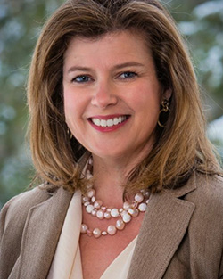
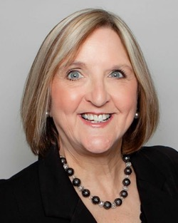
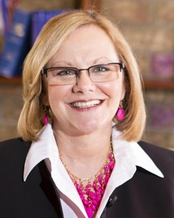
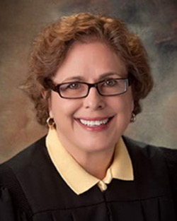

2018 General Election Candidates
Federal
-
US Senator
Sherrod Brown
No one fights harder for Ohio’s working families or takes his job more seriously than Sherrod. It’s a reputation he earned through his career in public service.
Sherrod Brown's website -

7th District - U.S. Representative
Ken Harbaugh
Ken is not a politician—he’s a problem-solver. He knows how get things done in a crisis. Just as he led teams to respond to disasters like tornadoes and typhoons, he is ready to take on the political disaster in Washington.
Ken Harbaugh's website -

16th District - U.S. Representative
Susan Moran Palmer
Susan grew up in the Youngstown area, and spent the majority of her life here in Ohio. She went to school here, raised three amazing sons here, and managed her own company in Westlake.
Susan Moran Palmer's website
State
-
Governor/Lieutenant Governor
Richard Cordray/Betty Sutton
Richard Cordray is a lifelong Ohioan, born and raised in Grove City, where both of his parents dedicated their careers to working on behalf of people with disabilities. They taught Richard that there’s no higher calling than dedicating yourself to the service of others a lesson Richard has never forgotten.
Richard Cordray/Betty Sutton's Website -
Attorney General
Steve Dettelbach
Born and raised in Ohio, Steve Dettelbach has stood before judges and juries to protect our communities from dangerous criminals and to stop corrupt politicians from both parties.
Steve Dettelbach's website -

Auditor of State
Zack Space
Zack Space was born and raised in the small eastern Ohio town of Dover. After graduating from Kenyon College, then earning a law degree at The Ohio State University, he returned to Dover and practiced law for nearly 20 years, during which time he served as a Public Defender and as Dover’s City Law Director. In 2006, he was elected to serve as the Congressman from Ohio’s 18th District, comprising 16 counties in rural southeastern Ohio.
Zack Space's website -

Sectretary of State
Kathleen Clyde
Kathleen Clyde grew up in Garrettsville, OH, a small town full of hard working people. That is where she learned just how special it is to grow up in this country where everyone has the right to vote and everyone has the opportunity to have their voice heard.
Kathleen Clyde's website -

Treasurer of State
Rob Richardson
Rob wants to bring his record of success to Columbus, where he will continue working to expand access and opportunities for people and holding the powerful accountable
Rob Richardson website -

69th District – State Representative
Carol Brenstuhl
Carol Brenstuhl is a wife, mother, grandmother, businesswoman, and Medina resident of more than two decades. Carol wants to make college more affordable for Ohioans and fight to protect the rights of workers in Ohio.
Carol Brenstuhl's website -

70th District – State Representative
Steve Johnson
With a degree from Ohio State and over 30 years of management in manufacturing companies, Steve Johnson is experienced with insurance, pensions, banking, health insurance, budgets and business growth.
Steve Johnson's website -
Ohio Supreme Court
Term beginning 1/1/19
Michael P. Donnelly
As Associate Justice of the Ohio Supreme Court, I will work toward creating policies that reduce Ohio’s justice gap, provide all citizens with the opportunity to access the courts for dispute resolution, increase transparency, and ensure that justice is neither delayed nor denied. With your help, we can renew the public’s trust in the justice system.
Michael P. Donnelly's Website -

Ohio Supreme Court
Term beginning 1/2/19
Melody Stewart
Judge Stewart is experienced, dedicated and ready to serve on the Ohio Supreme Court. Judge Melody Stewart has over 30 years of legal experience – ranging from civil litigation practice and teaching students at several Ohio law schools to being an appellate court judge and sitting by assignment on the Ohio Supreme Court.
Melody Stewart's website
County
-
Commissioner
Carol Carter
Carol will represent Medina County with honesty, bravery, passion, accountability, and a clear vision. She will lead, recognize, inspire, and work tirelessly to ensure the great people of Medina County receive honest and fair representation.
Carol Carter's website -
Auditor
Mike Kovack
Mike Kovack first assumed the office of Medina County Auditor on January 15, 1993. He was re-elected to his sixth term in office in 2010.
Mike Kovack's website -

9th District Court of Appeals
Diana Colavecchio
Diana has been practicing law for nearly 30 years, being a public servant and knowing how courts work has prepared her to be a Judge. We all look to our Courts for guidance -- it’s important to have Judges who have a wide and varied background. Judicial races are important.
Diana Colavecchio's website -

Court of Common Please – Domestic Relations Division
Mary Kovack
As a Judge, a former assistant prosecutor, family law attorney and a single parent who has been through the process, I understand that when families fight, only the lawyers win. I will continue to create new and inexpensive ways to help children enjoy the love and support of their parents and families.
Mary Kovack's website
Mission
The Medina County Democratic Party's mission is to strengthen all of our communities by connecting people to the local political process, developing community leaders and electing officials who listen, respond and represent the needs of the community.